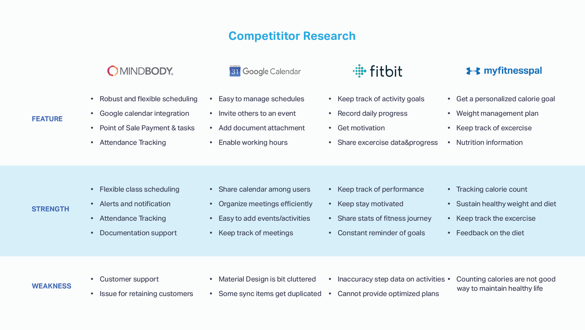
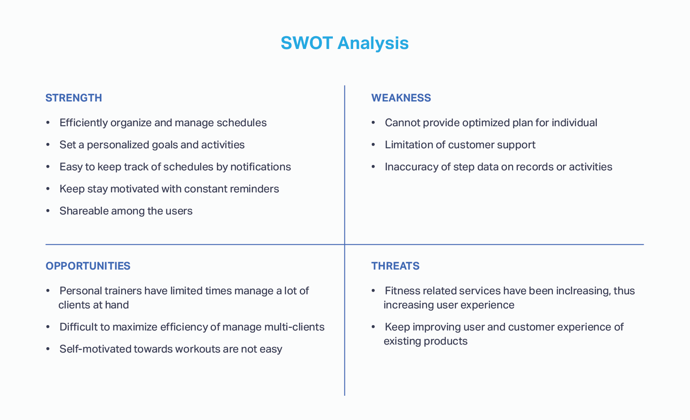
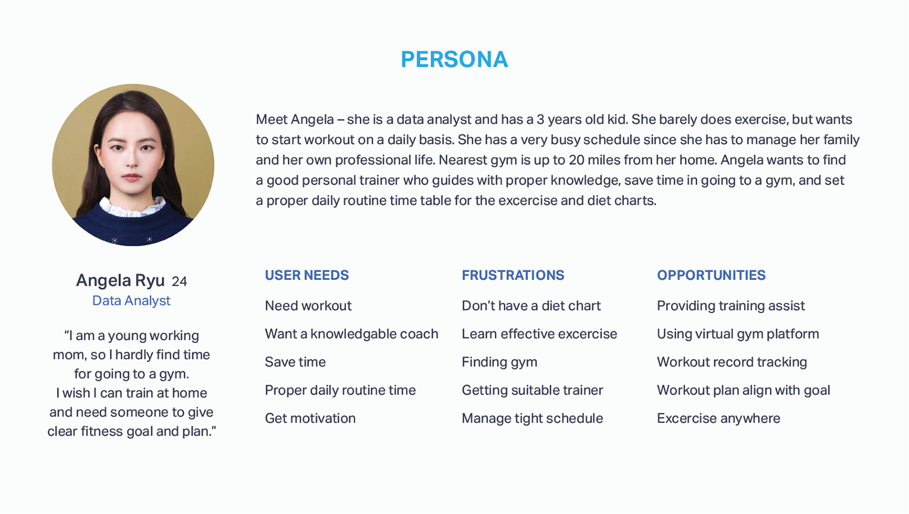
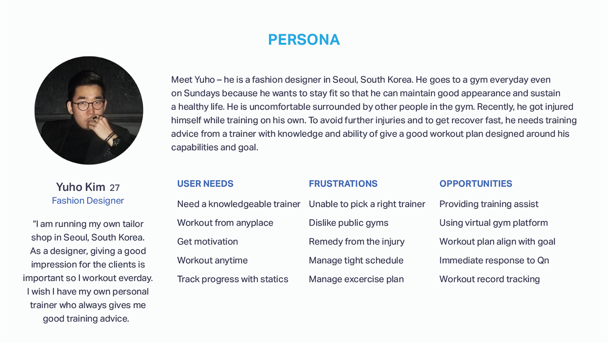
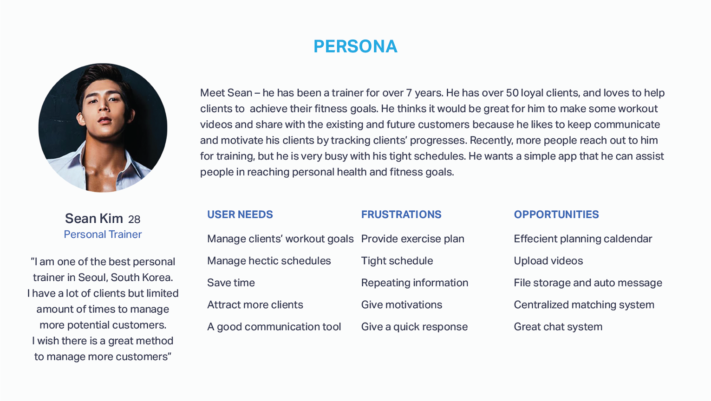
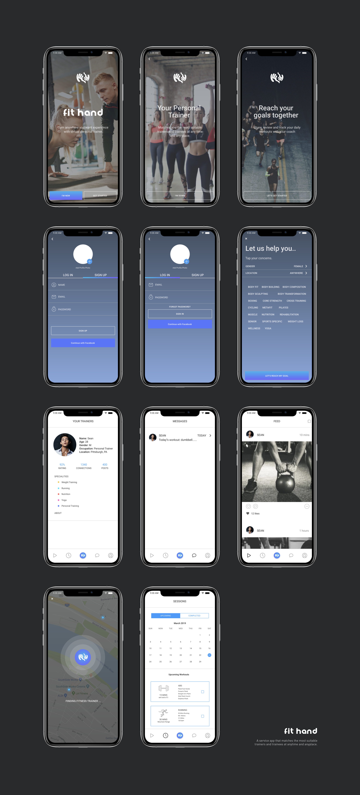

FitHand

FitHand provides a solution that allows trainers and trainees to participate in this virtual personal trainer platform and workout marketplace. FitHand matches trainers and trainees at hand, letting you choose who is right for you.
It allows trainers to build and schedule trainee fitness goals by giving customized workouts. It also builds a good relationship between the trainer and trainee by asking questions and acknowledging insightful advice.
This is one of my self-initiative personal project to challenge myself bring out of my creativity and nurture my passion.
By growing the personal training business 10% per year, Trainers have limited time to meet with individual clients. Clients who are not interested in personal training and even in the workouts are difficult to motivate outside of sessions. It takes a lot of money to attract new customers, so It is difficult to find new clients and build consistent relationships.
Competitor Research 
SWOT Analysis 
As life expectancy has increased and income levels have improved, interest in health, which affects the quality of life, has naturally increased. This is in line with the global demand for health-related consumption, not only in developed countries that are now centered, but also in some developing countries where income levels are rapidly improving.
To serve the clients, trainers use different techniques like using workouts that they created with multiple clients for maximizing the efficiency. However, with the FitHand, they can focus on sustaining a balance between giving a personalized experience and training. Also, they can manage their time by using the app conveniently.
Almost of all trainers have a clear knowledge of their clients’ information and habits even if they are not with them. So they try their best to suggest better habits for the trainees. Trainers have their limitation to take care of their trainees which resulted in a loss of about half of clients. However, with the FitHand, trainers can save a lot of time by giving suggestions through a centralized hub system.
The interviews indicate that almost all of the trainers are satisfied with their jobs and want to keep doing them. With the Fit Hand, trainers can manage their clients more efficiently.
I performed user interviews and conducted surveys to derive insight from the customers. Based on the research results I understood that users have different motivations in using a product. From here, I created personas to prioritize the type of users to my application. I have divided the personas into three categories: A person who does not work out, a person who likes to work out and a personal trainer. At first, I planned to phase my product only to support the goals of the trainer. Yet, I believe that for a better result, benefiting more than one group should be added in my design process. Therefore, I considered the variety range of groups of personas.
Person who like to workout
Person who like to workout
Personal Trainer
Building the personas had helped to remind the stakeholders about the product, make effective design decisions, and to provide innovative solutions.
people who like to workout
Personal trainers
Each interviews was 10 minutes.
I decided to choose mobile for the supported platform for following reasons:
Portable, more accessible than web
Users could find the most suitable trainers at anytime, anywhere
Enables to see workout updates from trainers
Devloping prototypes and rapidly iterating are all based on testing results. We learned even small things, like this age range tends to find it easier to click buttons on the bottom of the ipad. We had all of our directional controls at the top, and they were not getting used!
I brainstormed and sketched out features based on the three priorities that I set for the major design goals.
For this project, I wanted to make the flow simple, so trainers don't get frustrated by the prolong process of matching the suitable trainees and managing the clients.
Trainers can login/signup, set up their own preference. Based on the information, Fithand matches trainers and trainees at hand.
Trainers can keep track of detailed information on their clients. Information including customer preference, contact information, notes, previous services and much more. They can get in touch with clients 24/7.
1. Trainers can manage their time by using day, week, and month view of calendar to see upcoming appointments.
2. Trainers can set up appointments on their own calendar that other people can reserve. So they can manage their time flexibly.
Trainers can create and assign workouts to clients as needed for maximum flexibility.
Trainers can check client performance in real-time data, simply by opening their profile.
Trainers can assign personalized exercise and nutrition plans to individual members, and use chat systems to constantly give feedback for additional motivation.
Customers or users always incline to the best that satisfies their needs. User research, Market Research, and Usability studies have changed my perspectives on how users would go about choosing a product.
Conducting user testing and cognitive walkthroughs were the best way to find out usability issues in the interface of the app. Most of the users discovered the application intuitive and could easily navigate between the screens.